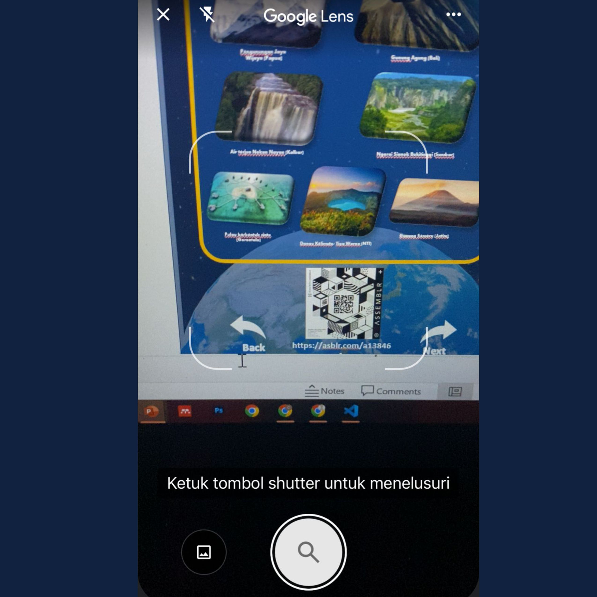
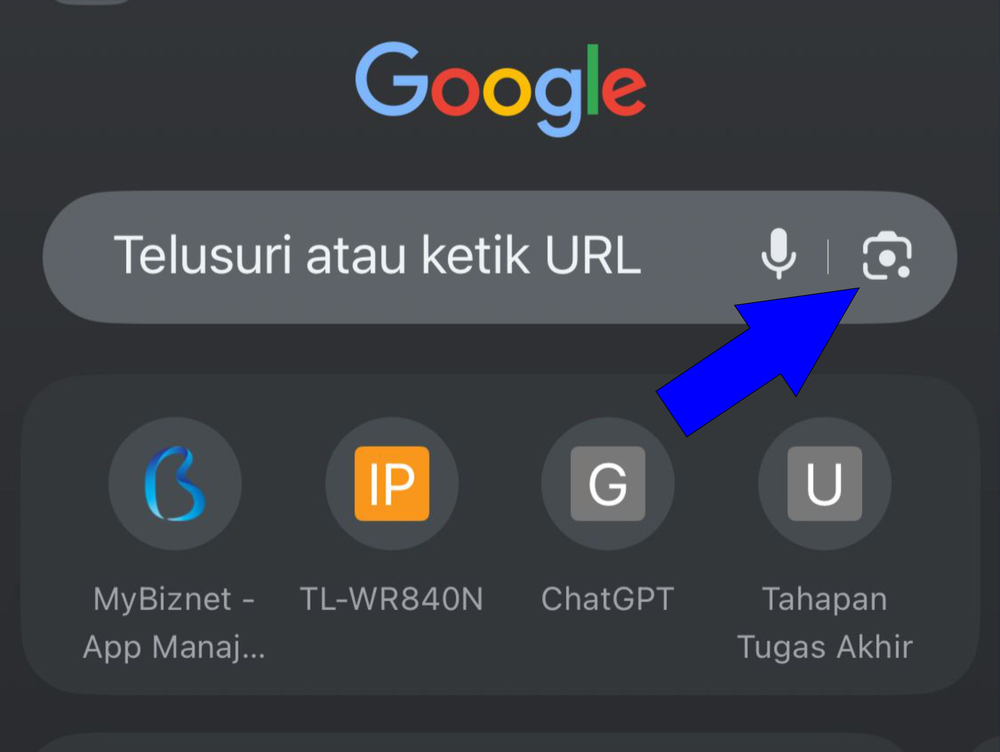
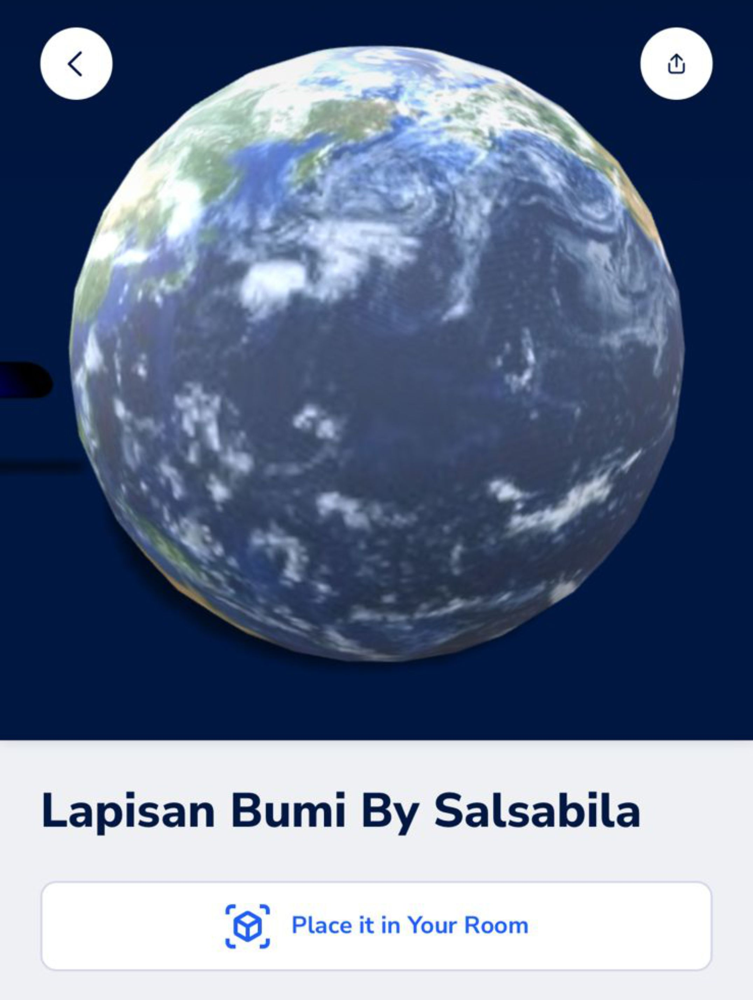
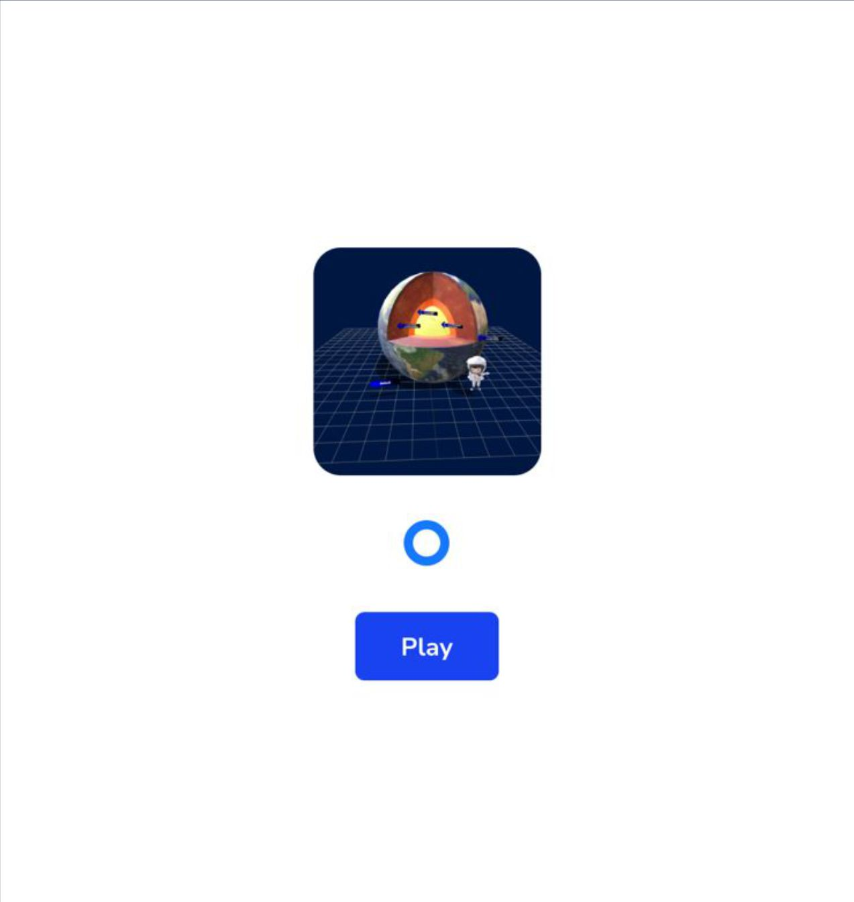
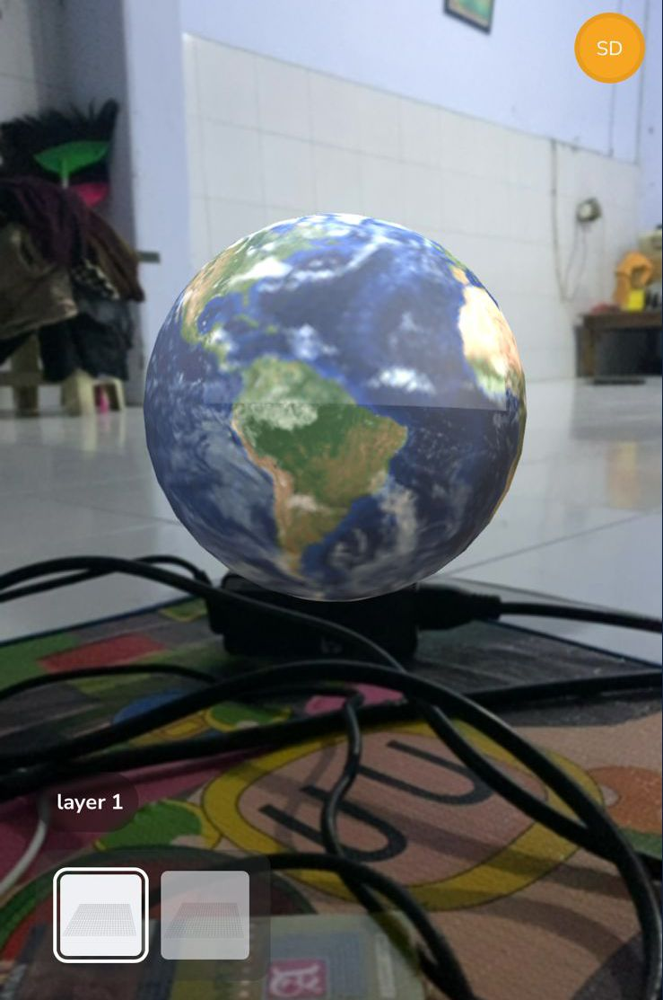

Jika Anda menggunakan kamera ponsel, pastikan kamera sudah ada fitur QR Code. Setelah itu, arahkan kamera ke QR Code dan tunggu notifikasi atau tautan muncul.
Jika tersedia google chrome silahkan buka chrome Anda, ketuk ikon Google Lens dan arahkan ke QR Code.
Setelah muncul gambar seperti di bawah ini, silahkan Anda ketuk "Place It In Your Room".
Ketuk "Play" untuk menjalankan visual 3D AR.
Arahkan kamera ke dataran seperti meja dan lantai.
